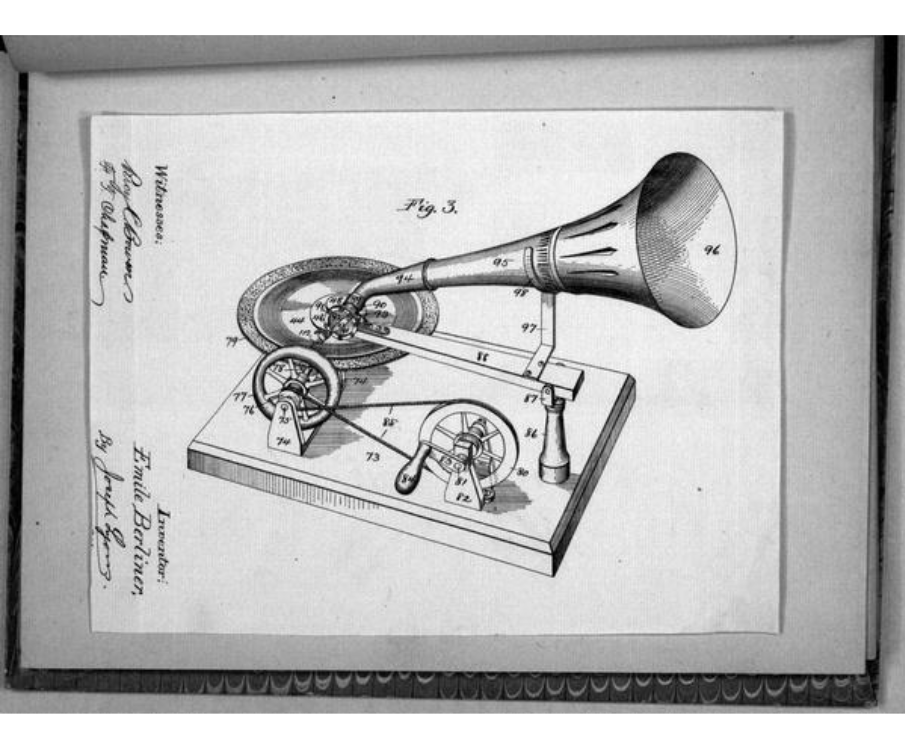

The History of the Gramophone
The gramophone, invented by Emile Berliner in the late 19th century, revolutionized the way we listen to music. Unlike its predecessor, the phonograph, which used cylinders, the gramophone utilized flat discs to record and play sound. This innovation allowed for easier mass production and distribution of music.
Gramophones became a staple in households around the world, bringing music into everyday life and paving the way for modern audio technology. The rich, warm sound produced by gramophones is still cherished by audiophiles and collectors today.
